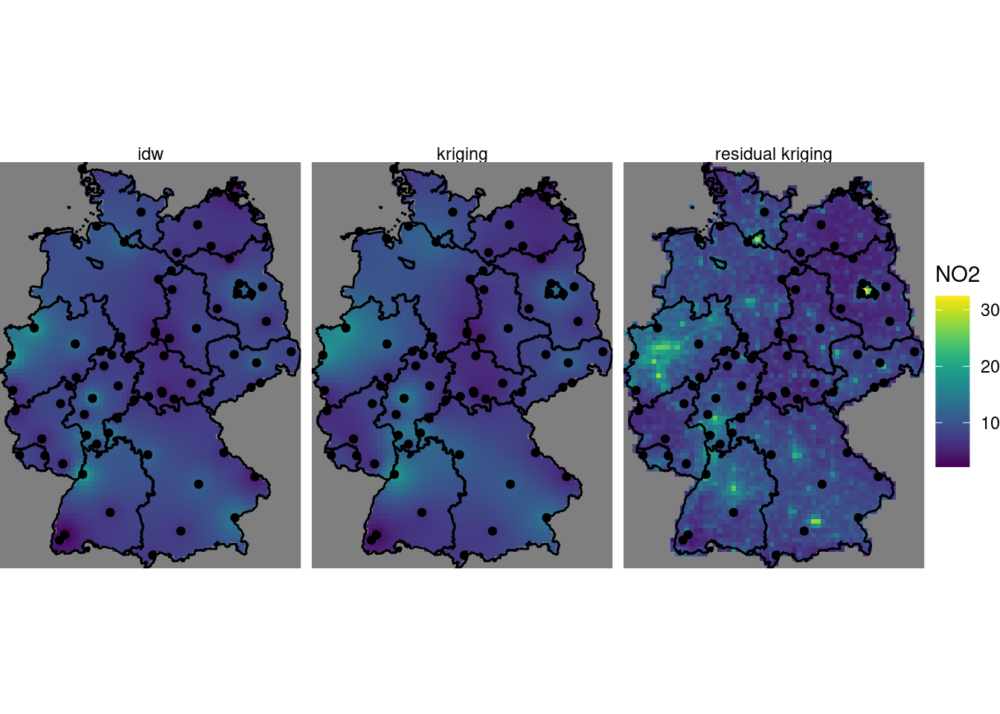
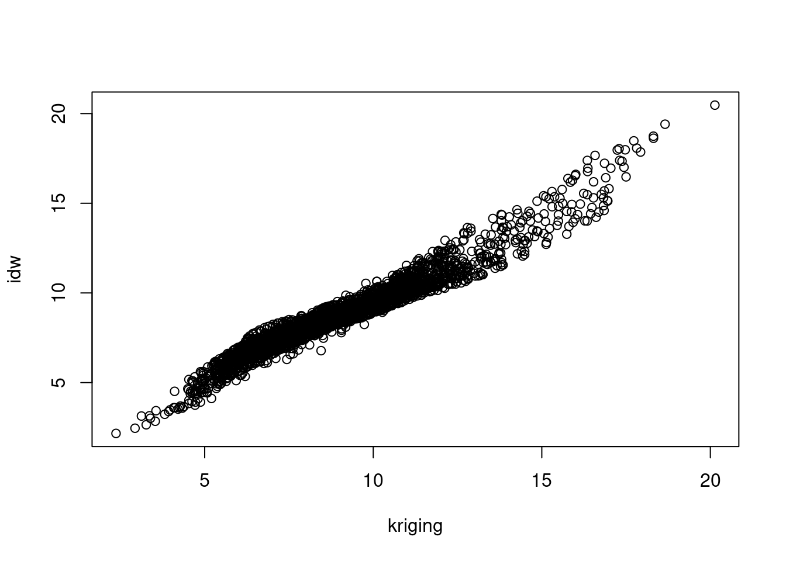
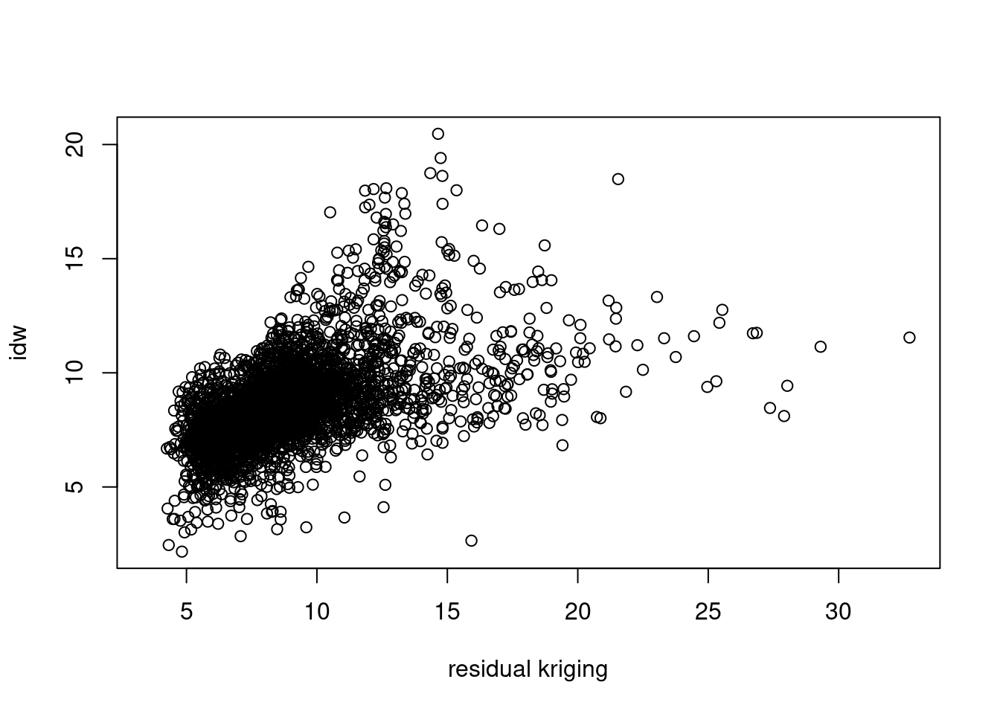
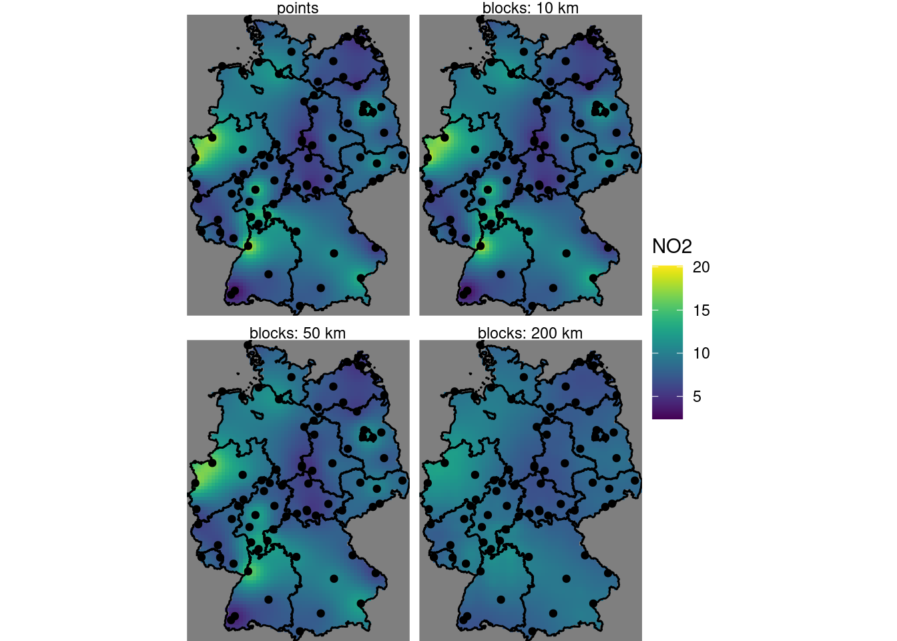
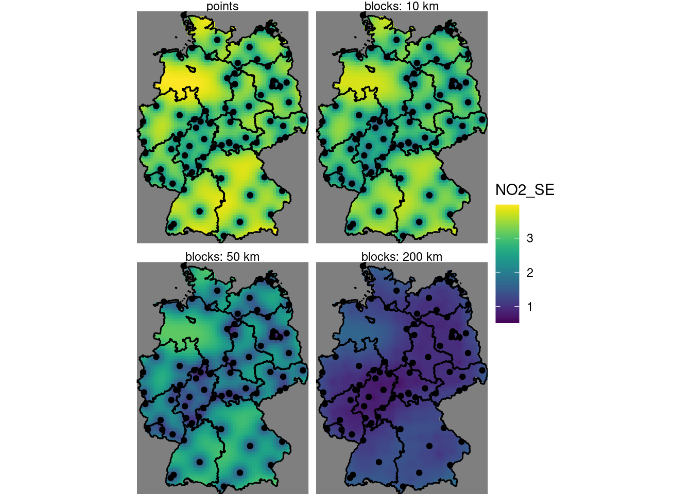
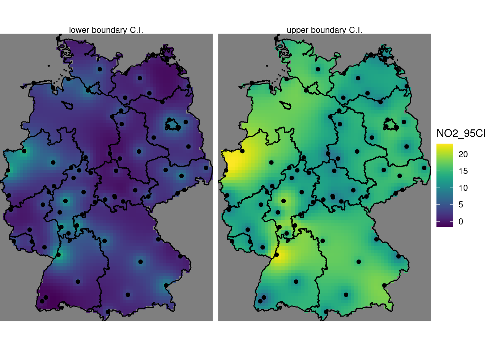
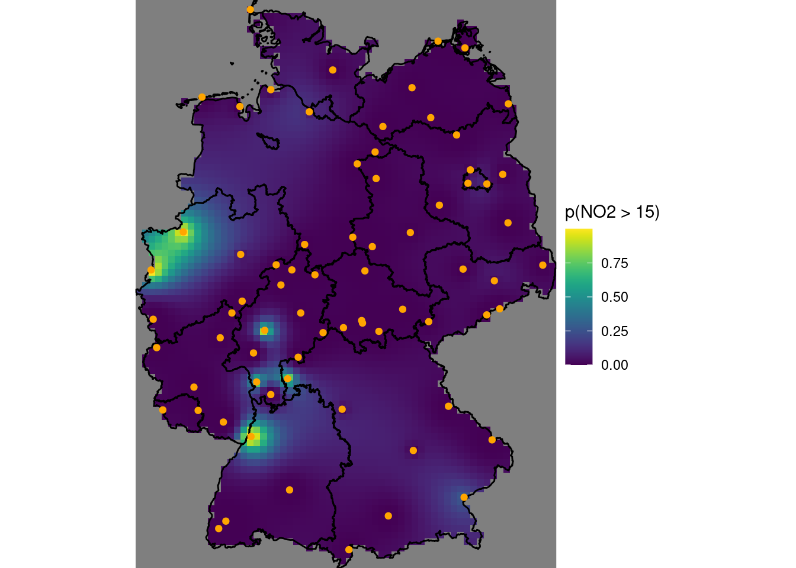

load("ch12.RData")12 Spatial Interpolation
12.1 ex 12.1
Create a plot like the one in figure 12.13 that has the inverse distance interpolated map of figure 12.2 added on left side.
load the .Rmd of this chapter in rstudio, and run it all the way up to the chunk where figure 12.13 is created (note that this requires that the population density csv file is present).
The chunk preceding the one that creates the plot can be modified as follows, to add inverse distance interpolations to the kriging and residual kriging:
library(stars)
# Loading required package: abind
# Loading required package: sf
# Linking to GEOS 3.10.2, GDAL 3.4.3, PROJ 8.2.1; sf_use_s2() is TRUE
library(gstat)
kr = krige(NO2~sqrt(pop_dens), no2.sf, grd["pop_dens"], vr.m)
# [using universal kriging]
k$kr1 = k$var1.pred
k$kr2 = kr$var1.pred
i = idw(NO2~1, no2.sf, grd["values"])
# [inverse distance weighted interpolation]
k$kr0 = i$var1.pred
st_redimension(k[c("kr0", "kr1", "kr2")],
along = list(what = c("idw", "kriging", "residual kriging"))) %>%
setNames("NO2") -> kmNext, the plot can be created identically, as the what dimension now contains the inverse distance “layer”:
library(ggplot2)
g + geom_stars(data = km, aes(fill = NO2, x = x, y = y)) +
geom_sf(data = st_cast(de, "MULTILINESTRING")) +
geom_sf(data = no2.sf) + facet_wrap(~what) +
coord_sf(lims_method = "geometry_bbox")
# Coordinate system already present. Adding new coordinate system, which will replace the existing one.
12.2 ex 12.2
Create a scatter plot of the map values of the idw and kriging map, and a scatter plot of map values of idw and residual kriging.
For this we can e.g. convert the object \(k\) to a data.frame:
as.data.frame(k) |> head() # NA indicates cells outside AOI
# x y var1.pred var1.var kr1 kr2 kr0
# 1 285741.3 6096239 NA NA NA NA NA
# 2 295741.3 6096239 NA NA NA NA NA
# 3 305741.3 6096239 NA NA NA NA NA
# 4 315741.3 6096239 NA NA NA NA NA
# 5 325741.3 6096239 NA NA NA NA NA
# 6 335741.3 6096239 NA NA NA NA NA
k.df = as.data.frame(k)
plot(kr0 ~ kr1, k.df, xlab = "kriging", ylab = "idw")
plot(kr0 ~ kr2, k.df, xlab = "residual kriging", ylab = "idw")
12.3 ex 12.3
Carry out a block kriging by setting the block argument in krige(), and do this for block sizes of 10 km (the grid cell size), 50 km and 200 km. Compare the resulting maps of estimates for these three blocks sizes with those obtained by point kriging, and do the same thing for all associated kriging standard errors.
For the point and block kriging values:
b0 = krige(NO2~1, no2.sf, grd["values"], v.m) # points kriging
# [using ordinary kriging]
b10 = krige(NO2~1, no2.sf, grd["values"], v.m, block = c(1e4, 1e4))
# [using ordinary kriging]
b50 = krige(NO2~1, no2.sf, grd["values"], v.m, block = c(5e4, 5e4))
# [using ordinary kriging]
b200 = krige(NO2~1, no2.sf, grd["values"], v.m, block = c(2e5, 2e5))
# [using ordinary kriging]
b10$points = b0$var1.pred
b10$b10 = b10$var1.pred
b10$b50 = b50$var1.pred
b10$b200 = b200$var1.pred
st_redimension(b10[c("points", "b10", "b50", "b200")],
along = list(what = c("points", "blocks: 10 km",
"blocks: 50 km", "blocks: 200 km"))) %>%
setNames("NO2") -> b
g + geom_stars(data = b, aes(fill = NO2, x = x, y = y)) +
geom_sf(data = st_cast(de, "MULTILINESTRING")) +
geom_sf(data = no2.sf) + facet_wrap(~what) +
coord_sf(lims_method = "geometry_bbox")
# Coordinate system already present. Adding new coordinate system, which will replace the existing one.
For the standard errors:
b10$pointse = sqrt(b0$var1.var)
b10$b10se = sqrt(b10$var1.var)
b10$b50se = sqrt(b50$var1.var)
b10$b200se = sqrt(b200$var1.var)
st_redimension(b10[c("pointse", "b10se", "b50se", "b200se")],
along = list(what = c("points", "blocks: 10 km",
"blocks: 50 km", "blocks: 200 km"))) %>%
setNames("NO2_SE") -> b
g + geom_stars(data = b, aes(fill = NO2_SE, x = x, y = y)) +
geom_sf(data = st_cast(de, "MULTILINESTRING")) +
geom_sf(data = no2.sf) + facet_wrap(~what) +
coord_sf(lims_method = "geometry_bbox")
# Coordinate system already present. Adding new coordinate system, which will replace the existing one.
12.4 ex 12.4
Based on the residual kriging results obtained above, compute maps of the lower and upper boundary of a 95% confidence interval, when assuming that the kriging error is normally distributed, and show them in a plot with a single (joint) legend
b10$lower = b10$points - 1.96 * b10$pointse
b10$upper = b10$points + 1.96 * b10$pointse
st_redimension(b10[c("lower", "upper")],
along = list(what = c("lower boundary C.I.", "upper boundary C.I."))) %>%
setNames("NO2_95CI") -> b
g + geom_stars(data = b, aes(fill = NO2_95CI, x = x, y = y)) +
geom_sf(data = st_cast(de, "MULTILINESTRING")) +
geom_sf(data = no2.sf) + facet_wrap(~what) +
coord_sf(lims_method = "geometry_bbox")
# Coordinate system already present. Adding new coordinate system, which will replace the existing one.
12.5 ex 12.5
Compute and show the map with the probability that NO2 point values exceeds the level of 15 ppm, assuming a normal distribution.
For this we use pnorm(), which gives the cumulative area under the curve from minus infinity up to a given value; one minus that value gives the probability of exceeding it.
b10$`p(NO2 > 15)` = 1 - pnorm(15, b10$points, b10$pointse)
g + geom_stars(data = b10, aes(fill = `p(NO2 > 15)`, x = x, y = y)) +
geom_sf(data = st_cast(de, "MULTILINESTRING")) +
geom_sf(data = no2.sf, col = 'orange') +
coord_sf(lims_method = "geometry_bbox")
# Coordinate system already present. Adding new coordinate system, which will replace the existing one.